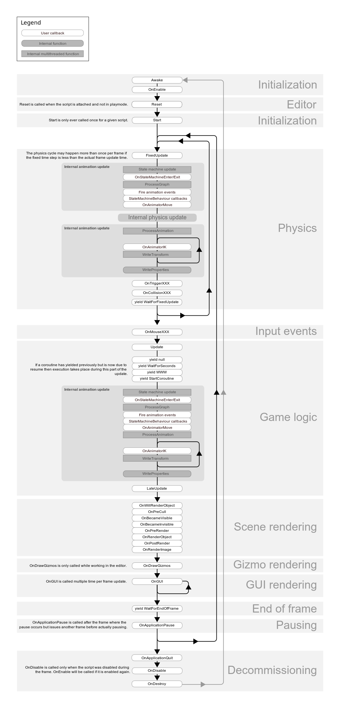

¿En qué orden se ejecutan los scripts en Unity?
Cuando desarrollás en Unity, seguramente usás métodos como Awake(),
Start() o Update(). Todos estos métodos son llamados por Unity en un orden
específico, que muchas veces no conocemos al detalle. Entender este orden de
ejecución puede ayudarte a evitar errores y a organizar mejor tu código.
üîÅ ¬øQu√© son los m√©todos de evento (event functions)?
Unity define una serie de métodos llamados event functions, que son invocados
automáticamente cuando ocurre cierto evento dentro del motor (como iniciar la escena, detectar una
colisión, o dibujar en pantalla).
Estos métodos los implementás dentro de tus scripts con MonoBehaviour y no hace falta
llamarlos manualmente: Unity se encarga.
üìã Orden t√≠pico de ejecuci√≥n
Durante la ejecución normal del juego, los métodos se llaman en el siguiente orden:
- Awake(): llamado al crear o activar un objeto. Ideal para inicializar variables.
- OnEnable(): cuando el objeto se activa.
- Start(): llamado una sola vez antes del primer frame. Usalo para lógica inicial.
- Update(): llamado en cada frame. Ideal para controles, timers, lógica.
- LateUpdate(): después del Update. Perfecto para seguir al jugador con una cámara.
- FixedUpdate(): ejecutado a intervalos fijos. Se usa para física.
- OnDisable(): cuando el objeto es desactivado.
- OnDestroy(): justo antes de destruir el objeto.
ü߆ Buenas prácticas
- No intentes acceder a otro script en
Awake()si el otro script inicializa enStart(). Podés obtener unnull. - Usá
FixedUpdate()para mover objetos con Rigidbody. NoUpdate(). - Para seguir a un personaje con cámara, hacelo en
LateUpdate(), así te asegurás de que el movimiento ya ocurrió. - Si querés controlar el orden entre scripts, usá el panel Script Execution Order
desde el menú:
Edit → Project Settings → Script Execution Order.
üìå Casos especiales
- OnApplicationPause(): se llama cuando la app es pausada (ideal para móviles).
- OnApplicationQuit(): justo antes de cerrar la app o salir del editor.
- OnValidate() y Reset(): se usan solo en el Editor, útiles para debug o custom inspectors.
üì∑ Imagen útil
El diagrama oficial de Unity explica esto gráficamente. Podés encontrarlo en: Unity Manual - Execution Order
üéì Conclusi√≥n
Conocer el orden de ejecución de Unity no es solo para programadores avanzados. Como principiante,
te va a ayudar a evitar errores comunes y entender por qué algunas cosas no funcionan como esperás.
Empezá prestando atención a Awake, Start, Update y
LateUpdate, y vas a tener un control mucho más preciso sobre tus scripts.